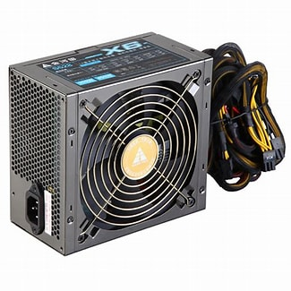
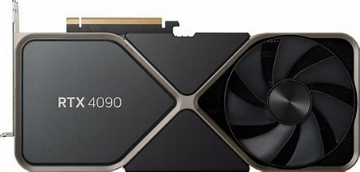

Introduction
A computer is a programmable electronic device that processes data and performs tasks according to a set of instructions called a program. It can store, retrieve, and process data, making it a versatile tool used in various fields. Computers come in different forms and sizes, from small embedded systems to large mainframes. Here are some key components and concepts associated with computers:
Hardware Components:
Central Processing Unit (CPU): Often referred to as the brain of the computer, the CPU executes instructions of a computer program. Memory (RAM): Random Access Memory is used for temporarily storing data that the CPU can quickly access. Storage: Hard drives, solid-state drives, or other storage devices are used for long-term data storage. Input Devices: Devices like keyboards, mice, and touchscreens allow users to input data. Output Devices: Monitors, printers, and speakers display or provide results to the user.Software:
Operating System: Software that manages hardware resources and provides services for computer programs. Applications: Programs designed to perform specific tasks, such as word processors, web browsers, and games.Data and Information:
Data: Raw facts and figures without context. Information: Processed and organized data that has meaning. Files and Folders: Data is often organized into files and folders on storage devices.Programming:
Programming Languages: Tools that enable humans to write instructions (code) for computers. Examples include Python, Java, and C++. Algorithms: Step-by-step procedures or formulas for solving problems or performing tasks.Networking:
Internet: A global network connecting millions of computers, facilitating communication and data exchange. Local Area Network (LAN) and Wide Area Network (WAN): Networks connecting computers within a limited area or over a larger geographic region.Types of Computers:
Personal Computers (PCs): Commonly used for individual or business purposes. Servers: Computers designed to provide services, resources, or data to other computers (clients) in a network. Mainframes: Large, powerful computers often used for complex calculations and large-scale data processing. Embedded Systems: Computers integrated into other devices or systems, such as in cars, appliances, and industrial machines.Functionality:
Input-Process-Output: A fundamental concept where computers take input, process it, and produce output. Software Development: The creation of computer programs or applications to perform specific functions.Parts of the computer
A computer is composed of various hardware components, each with a specific function. Here are the key parts of a computer:
Central Processing Unit (CPU):
Often referred to as the brain of the computer, the CPU performs calculations and executes instructions.
Memory (RAM):
Random Access Memory (RAM) is used for temporary storage of data that the CPU needs to access quickly. It is volatile memory, meaning it loses its contents when the power is turned off.
Storage Devices:
Hard Disk Drive (HDD): Traditional storage devices that use rotating disks to store and retrieve data.
Solid State Drive (SSD): Faster and more reliable than HDDs, SSDs use NAND-based flash memory for storage.
Motherboard:

main circuit board that connects and allows communication between various hardware components, including the CPU, memory, storage, and peripherals.
Power Supply Unit (PSU):
Converts electrical power AC voltage to DC voltage from an outlet into a form that the computer components can use.
Graphics Processing Unit (GPU):
Specialized processors designed to handle graphics-related tasks. They are essential for gaming, video editing, and other graphics-intensive applications.
Peripheral Devices:
Input Devices: Keyboards, mice, scanners, and other devices that input data into the computer.
Output Devices:

Monitors, printers, and speakers that display or output information from the computer.
Storage Devices:

External hard drives, USB drives, and memory cards for additional storage.
Cooling System:


To prevent overheating, computers often have cooling systems, which can include fans, heat sinks, and, in some cases, liquid cooling.
Networking Components:

Network Interface Card (NIC): Allows the computer to connect to a network, either wired or wirelessly.

Ethernet or Wi-Fi Cards: Enable wired or wireless network connectivity.

Expansion Cards: Additional cards that can be added to the motherboard to provide extra functionality, such as sound cards, graphics cards, or network cards.
BIOS/UEFI:
Basic Input/Output System (BIOS) or Unified Extensible Firmware Interface (UEFI) is firmware that initializes and tests the system hardware during the boot process.
Case/Chassis:

The enclosure that houses and protects all the internal components of the computer.
Input/Output Ports:

Connectors on the computer for external devices, such as USB ports, HDMI ports, audio jacks, and more.
Power Button and Indicator Lights:

The power button turns the computer on and off, and indicator lights provide information about the system's status.
Cables and Connectors:


Various cables and connectors are used to link the internal components and connect external devices to the computer.
These components work together to enable the computer to process data, run applications, and perform various tasks. The specific configuration and capabilities of a computer can vary depending on its intended use, whether it's a desktop, laptop, server, or specialized computing device.